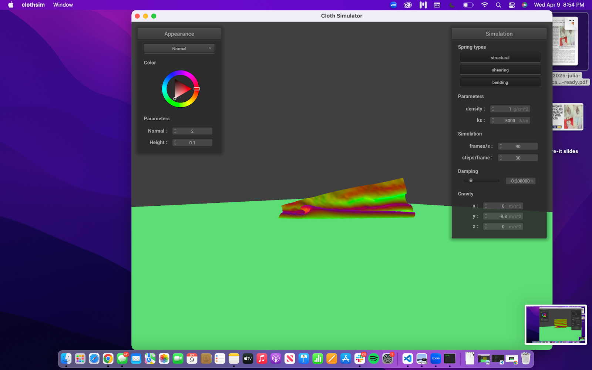

We implemented cloth simulations by modeling point masses with springs. We added different types of springs and included other parameters including density and damping. We also supported gravity and modeling of forces. We then implemented collision handling; both on external objects such as a sphere and a plane, and self-collisions with the cloth itself. Then, for more enhanced visual effects we implemented diffuse lighting and shaders with the Blinn-Phong model. We also supported textures of shaders for enhanced surface detail and reflections of the environment.
Part 1: Masses and springs
All Constraints
With Only Shearing
Without Shearing
Zoomed in
Part 2: Simulation via numerical integration
When we were playing around with parameters in the simulation, we had some interesting results. We found when adjusting spring constant (KS) that less tension made the cloth seem more droopy, and more tension made the cloth sag much less. While visually slightly different, we found that when maintaining the default KS of 5000 N/m and adjusting the density, lesser density barely sagged, while higher density sagged more, which makes sense due to weight differences. When adjust damping factor, we didn't notice much visual difference in the final resting stage, but higher damping resulted in the cloth falling slower, and 0% damping resulted in the cloth swinging back and forth in near-perpetuity.
Default, KS: 5000 N/m
KS: 100 N/m
KS: 100000 N/m
Density: 1 g/cm^2
Density: 45 g/cm^2
Damping: ~0.5
Damping: ~0.85
Part 3: Handling collisions with other objects
When adjusting KS we find that with lower tension the cloth drapes over the sphere more, and as you increase KS it is much less "weighted down" around the sphere.
KS: 500 N/m
KS: 5000 N/m (Default)
KS: 50000 N/m
At rest on Plane
Part 4: Handling self-collisions
For my hash position function I used Cloth::hash_position to take in a point mass’s position and uniquely map it to a float that represents a specific 3D box volume. I basically partition the 3D space into 3D boxes with dimensions w ∗ h ∗ t w∗h∗t where w w = 3 * width / num_width_points, h h = 3 * height / num_height_points, and t = m a x ( w , h ) t=max(w,h). Then, using fmod I take the position and truncate its coordinates to the closest 3D box. Finally, using these new coordinates, I compute a unique number using a polynomial hash function h=(a×P1+b)×P2+c that corresponds to those 3D coordinates and return it. I build a spatial map by looping over all point masses and making a map to translate from the unique number to a list of PointMasses with that hash. Finally, I fill out the self collide function which given a point mass, will calculate its unique hash and look up potential candidates for collision using the map I created. If a candidate is within 2∗thickness distance apart, I compute a correction vector that can be applied to the point mass. float make_up = 2.0f * thickness - diff.norm(); Vector3D correction_vec = diff.unit() * make_up; final_correction_vec += correction_vec; total_collisions++; The final correction vector to the point mass’s position is the average of all of these pairwise correction vectors, scaled down by simulation_steps.
Falling with Self-Collision
Low Density

High Density
Higher density forces the cloth to go STRAIGHT down more, whereas low density it can kind of fold among itself more loosely.
Low KS
High KS
High spring force it folds on it self more versus coming straight towards the ground plane with a low spring force.High Ks means more tension thus it is able to carry its weight more.
Part 5: Shaders
A shader program is a set of instructions that run in parallel on the GPU to process and render graphics. In our case we take in input about the graphics scene and are outputting a 4 dimensional vector. Shaders are essential for manipulating how objects appear on the screen, allowing for effects like lighting, shadows, textures, and more. The two most common types are vertex shaders and fragment shaders. A vertex shader processes each vertex before they are transformed and projected onto the screen. Its main tasks include: Transforming the vertex positions (e.g., applying rotation, scaling, and translating to position the model in the world). Calculating lighting information and passing it along. Computing texture coordinates or other vertex attributes. For lighting, the vertex shader often computes lighting effects like ambient or directional light for each vertex based on its position and normal vector. However, it doesn't finalize the color; it typically passes this information to the next stage of the pipeline (like the fragment shader) for final calculations. A fragment shader works on fragments, which are essentially potential pixels on the screen. Each fragment corresponds to a point in the final image, and the fragment shader calculates the output color
Blinn-Phong shading is a perceptual lighting model that takes into account ambient, diffuse and specular lighting. Ambient lighting is the constant background light present everywhere. Diffuse lighting is the reflection from the light source that scatters equally in all directions.Specular lighting is the bright spot of light that reflects off shiny surfaces. In our program, I use the formula Ld = ka * Ia + kd(I / r2)max(0, n ˙l) + ks(I / r2)max(0, n ˙h)^p . ka, Ia, kd, ks, and p are user-defined constraints. I chose these by trying to match the output with that of the spec:
float k_d = 0.8;
float k_a = 0.3;
vec3 I_a = vec3(1, 1, 1);
float k_s = 0.8;
float p = 16;